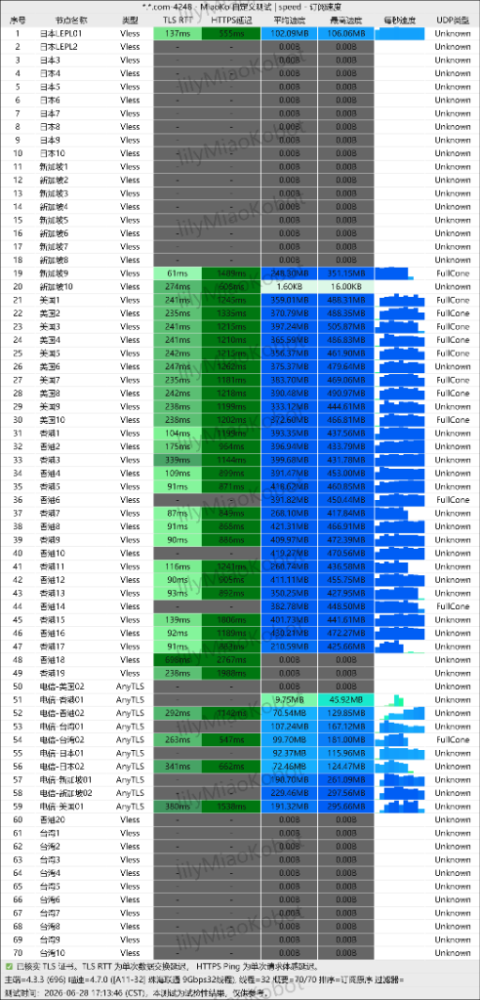

在如今信息高速流通的时代，稳定、高速的科学上网网络访问早已成为科研检索、外贸沟通、程序开发及超清影音爱好者的绝对刚需。然而，面对黄金时段的网络大塞车、敏感期频繁的断连，以及 ChatGPT 等平台对常规机房 IP 极其严苛的封锁，想要找到一款“稳定不掉线、速度爆表、价格还划算”的优质机场，确实像是在沙里淘金。
今天，我们为大家带来近期在出海圈内口碑爆棚的**“快狸机场（Quick Li）”**深度实测。看看这款每月仅需 15 元起（相当于一杯奶茶钱）的加速新秀，究竟是如何实现“企业级高爽体验”的，它又为什么是你今年最值得闭眼入手的网络神机？
🌟 核心杀手锏：IEPL 专线，晚高峰彻底告别转圈圈
很多朋友都踩过类似的坑：买了一些号称超大带宽的低价直连节点，白天刷网页飞快，可一到晚上 8 点黄金档，连看个 YouTube 1080P 视频都卡得像看 PPT。这是因为普通节点的出海流量极易在晚高峰被运营商公网限速排挤。
快狸机场的核心节点全部接入了昂贵的**企业级 IEPL 国际专线**。数据流量通过专有海底/陆地光缆直接出海，不通过公网防火墙，实现了真正的物理抗干扰。实测在晚高峰黄金时间段，丢包率稳定在 0.1% 以下，Ping 延迟平稳如镜，无论是刷 8K 极清视频还是玩外服电竞游戏，都能做到“进度条随意拖拽，秒开零等待”。
🔒 顶配安全方案：AnyTLS 伪装与原生住宅 IP
除专线加持外，快狸机场还在技术层面进行了两项行业降维打击式的优化：
- AnyTLS 协议深度伪装： 全面部署由 sing-box 核心技术团队开发的最新 AnyTLS 协议，完美去除了代理握手特征，将你的流量伪装成访问微软更新、苹果服务等正常 HTTPS 加密流量，即使在严苛的 DPI 包检测下也能做到“无感隐形”，保障封锁时期稳如泰山。
- 原生住宅 IP 链式安全路由： 针对外贸网店运营、ChatGPT 调用、海外社交平台养号等高端需求，快狸支持将流量中转至干净的原生静态住宅 IP。你的身份将被目的端完美识别为正常的海外居民家庭宽带，彻底告别被网站频繁人机验证、甚至封号的窘境。
📊 晚高峰实测数据对比（南方电信 500M 宽带）
| 测试项目 | 普通加速节点（对比组） | 快狸机场（AnyTLS 专线节点） |
|---|---|---|
| Ping 延迟稳定性 | 180ms - 420ms (剧烈跳动) | 82ms - 95ms (异常平稳) |
| 晚高峰丢包率 | 12.8% (网页频频加载失败) | 0.1% (几乎无感知丢包) |
| 8K 超高清视频 | 严重卡顿，强制自动降画质 | 瞬间秒开，测速冲破 180,000 Kbps |
| AI 工具 (ChatGPT) | 时常提示“Access Denied” | 丝滑登录，完美识别为住宅宽带 |

图：快狸机场 AnyTLS 协议及专线节点晚高峰并发跑分测试
💡 为什么“快狸机场”是你无悔的终极选择？
第一，极简上手： 摒弃了流氓、臃肿的自研客户端，提供一键导入苹果 Shadowrocket（小火箭）、Clash Verge 的配置转换，甚至贴心附带了避开手机厂商“纯净模式”、Google Play 保护的保姆级图文教程，小白 3 分钟即配即用。
第二，极致性价比与裂变免费： 相比市面上动辄三四十元起步的高昂专线服务，快狸仅需 15元起 的月付方案简直是价格屠夫。官方目前提供注册即可领取免费试用流量的福利，满意再订购；而且通过后台邀请机制推荐好友，还能拿到超高额度的返佣，不少老哥已经通过推荐轻松实现了“白嫖无限续杯”。
🛒 总结：给你的时间来一次超值投资
网络世界里，最昂贵的成本永远是“被卡顿和掉线浪费的时间”。与其每天在论坛里大海捞针般地寻找那些极不稳定、甚至有隐私泄露隐患的临时节点，不如用一杯奶茶钱给自己的网络升级。快狸机场用最强悍的 IEPL 专线和 AnyTLS 去特征伪装，交出了一份接近满分的答卷。
稳定丝滑，触手可及。快狸机场官方正限时发放新用户优惠券，点击下方官方专属邀请链接注册，即刻开启你的极速、安全互联新篇章！